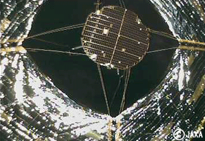

|ω･)ﾉｼ 2,3日どっか行ってきます
家の裏には川が流れていて、毎年蛍が乱舞しております。
ふと空を見上げると、昼間の曇天からうって代わってスカッと晴れた夜空でした。
おお、月も綺麗に昇っておるわい。
、、、あれ、写真に収められないかな？
はっ Σ( ﾟдﾟ)
今こそずっとやってみたかった夜空の撮影に挑戦すべきなんじゃね！？
チャンスなんじゃね！
とぁー！！
って事で、愛機α300を持ち出してやってみました。
青い月。
[これでもトリミングしかしてないんだぜ！そして撮影環境不明（何]
星の光跡(実際は地球が動いているわけだがっがが)
[ F5.6 , ISO200 , 焦点距離300.0mm , シャッター開放180.0秒 ]
うほー！出来た！出来たでぇぇ！
露出時間とかなんだかんだの設定とか
かじった知識だけで割といい加減にやったんですが、意外と写るもんですねー！
イイネッ！！
素晴らしいねっ！！
もっと上手くなりたーーい！
わーもう我慢出来ん。
もっと山奥に行って、もっと星が見える所まで写真撮りに行ってやる！
そう！昔、富士山に登った時に見た、アノ満天の星空を収めてやる！！
天の川ぁぁぁ！天の川ぁぁぁ！！
あーそれはいいが、あ？うむ。行くのは結構だ。
しかしそんな時間あるのか？
え？あー
こないだ受けた二次面接の結果が、まだ返ってこないんですよね。
なんだよ。そしたら迂闊な事出来ないじゃねーか
ぬぁー
動くに動けない状況に陥っている俺を後目に
月はただ美しく、無慈悲に、空に在り続けているのでした。
あらっ！男前！
キリラさんに薦められて、髪をシルバーに染めてみました。
白？いいえ。シルバーです
先日、我が家にて再びポーカー大会を開催出来ました。
集まってくれた方は
ホイさん、マリアさん、キリラさん、マリーさん。
んで、キリラさんのお師匠、ギンさん。
なんか妙な仮面が見えますね（
はっはー！今回も儲けさせてもらったぜ！
うひひ(･Θ･)
あー楽しい。楽しい。
どんな形であれ、同じ時間を共に遊ぶってのはイイですねぇ。
オンラインの醍醐味ですわ。
ほんと、チャットしかしねぇな、俺
でと、近藤さん先導による生き別れの腹違いの弟探しの旅にも出ました(違
はるばる南米まで行ったんですが、、、結局は見つけた場所はいつものリスボンでった(´σд`)
おお弟よ！こんなとこにいたのか！
再会の喜びを、ホイさんの下で分かち合ってみたり。
ふう。いい加減落ち着きました。
更新再開。
はやぶさ関連画像、いかがでしたか？
俺はもう感動で胸いっぱいです。
日本人の技術力に、ただただ感服しております。
で、これが6月13日 22:28頃、「はやぶさ」が地球との最後の交信を終え、通信のための電波信号が消えてゆく瞬間を捕らえたものらしいです。
おお、、本当に途切れてしまっている、、、
よく頑張りました。さようなら。
キナ臭い現在の日本で、はやぶさ2号機が上手く運営出来るかどうかは激しく不明ですが
おまいの成した功績は世界に誇れるんだぜ。自信を持って果てな！
|ω;)ﾄﾞﾌﾞﾜ
で、現在小型ソーラー電力セイル実証機IKAROSが、鋭意宇宙航行中です。
2010年06月14日、IKAROSから小型分離カメラ(DCAM2)による自身の撮影にも成功しております。
深宇宙での分離・撮影。これまた世界初の快挙！
分離したカメラ(DCAM2)は5cm x 5.5cm の世界一小さい人工衛星として
機関停止状態ですが、これからも太陽系を回り続けるそうです。
なんだー！なんだったー！！
すげー凄すぎるぜJAXA技術者！

ここは地球から1000万km離れた場所。
1000万kmってゆー事は、えーと。
地球から約30光秒の場所か。
うへー想像つかねー( ´;ﾟ ;ё;ﾟ ;)
日本全国、もしかしたら世界中の人が観ているのかして、
Live映像としては見れませんでしたorz
でも、和歌山大学がGJだったので、5分後ぐらいに録画映像を見ることが出来ました。
見逃した方はコチラをチェックしてみてね。
感動しましたねー
まだ興奮冷めやらん。
なので、また明日まとめます（
でと、どこで拾ったのかは忘れたけども
はやぶさの大気圏突入映像をココからダウンロード出来るようにしてみました。
分解バラバラになってしまった はやぶさ本体や、
分離したカプセルが前方に飛び出している様子がよくわかる映像です。
※ FileSize：42.5MB HayabusaRentryVideo.zip
あ、やべ。ちょっと泣けるし(;Θ;)
続く
はやぶさが、はやぶさがあー
ごめんなさい。後でまとめる。
もうしばらくLive情報に張り付いています。
釣りから帰ってきました。ただいまー
やーいい天気で気持ちよかった！
約23cmぐらいのキスがいっぱい釣れました！
ん！キスとしては中々イイ型だ！いえーい
で、これがその港で見つけたナイスな警告。
どれぐらいの速度よ！？ってゆーね！
ううむ、このセンスは見習わないとな。
おしゃ、一次面接受かった。
次、二次面接。
安心して今夜、釣りに出かけよう（
ふと、前回内定もらった時は何月頃だったかなーと過去ログを漁ってみると、、、
2006年06月25日 でしたｗ
んだよっ！結局俺はアレか！やりたい時にやりたい事をすると、年間通して同じ様な事やってるってか！！
ほんとになんなんだろうね、俺って。
でと。
余裕も出来たって事で、大航海にも復帰しまった(･Θ･)
さあー喋りたいぞー！(日本語変だね)
で、昼間に放置していたらば
早速ボスザルさんの洗礼を受けましたｗ
うひひ( ´;ﾟ ;ё;ﾟ ;) いい気分だ、皆大好きｗ
これから何もかもが楽しみだ。
やろうやろうと考えてたけども、ずーっとやってなかった過去日記へのリンク整理。
遂にやっちまいました。
もう、何月のページとか決めずに、単純に前、後ろって感じで。
もうね、過去ページのソースがきったないのなんのってｗ
それと、あーこれ書いてた時はこんなんだったなー なんて、ちょっと思い出に浸ってみたりして。
同時に、若かった頃の記録が赤裸々に公開されているわけですな(;･ω･)
まー、いい思い出だって事で、あえて手直しはせずそのままにしておきました。
本当は2004年以前もあったはずなんだけども、、
PCクラッシュしてしまった時に全部無くなってしまったんだったなー なんて事も思い出したりして。
いえーい！一眼レフ用のレリーズGET---!
こ、これさえあれば！
星の写真が撮れる！月の写真が撮れる！！(かもしれない！）かもしれない！(何故二回)
早く晴れないかなーうひょー( ´;ﾟ ;ё;ﾟ ;)
うわーいヾ( ´;ﾟ ;ё;ﾟ ;)ﾉ
日本人のヒーローで俺のスーパーリスペクト、野口聡一さん(45)が無事帰還しました！
無事で何より、、うわーん(;Θ;)
ロシアの宇宙船ソユーズに乗り、カザフスタン中部の草原に午前9時25分（日本時間午後0時25分)に帰還。
滞在期間は2009年12月から連続163日間！
過去の滞在期間を含めて177日間！
すげー！
地球の1気圧・1Gは、どんな風に思えるんだろうなぁ
さて、この日の為に俺は妄想ロシアに滞在していたわけですが、そろそろ帰国します(何
ルシフェｒ【検閲省略】
それと6月13日には、小惑星探査機「はやぶさ」が地球まで4万kmってとこまで近付くそうです。
これも地球での回収が成功するといいですね。
JAXAの藤村彰夫教授曰く、
「小惑星からのサンプルが直接手に入れば、どんなに微量でも研究レベルは大きく向上するんだぜチェケラ」だそうな( ･Θ･)
チェケラは言わないか
夢が、、嗚呼、夢が広がる。
行けー突き進めー日本人ーイエーーイ
で、あー
なんか首相が辞めましたね。
あんな宇宙人なんかが、ほんとの宇宙から帰ってきた野口さんの記事よりも優先されてしまう悲しい現実。
まったく、やれやれだぜ